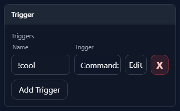
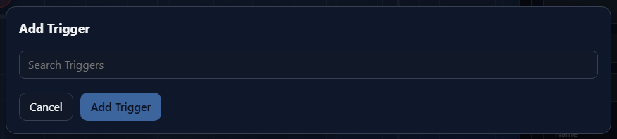
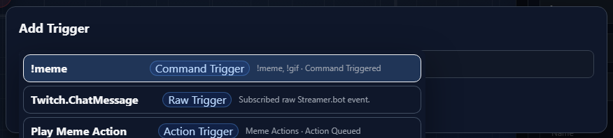
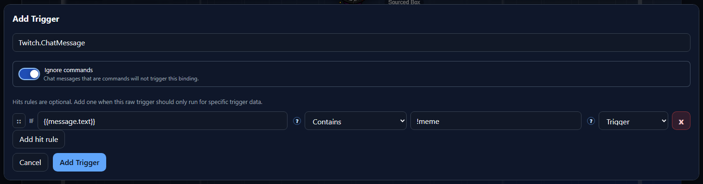

Inside Component
Add Trigger
The Add Trigger dialog binds a Streamer.bot event, command, or action to the selected overlay box. When the trigger fires, NekoBot decides which source or sources in that box should run.
Open It

Select a box on the overlay stage, open the box inspector, then use the Triggers section. Add Trigger opens a new trigger binding. Existing trigger rows can be renamed, edited, or deleted from the same list.
Trigger nameTrigger bindingCommand, Action, or Event, plus the command mode, action event, or raw event key.EditDeleteTrigger Search


The dialog loads available triggers from the Streamer.bot catalog, then displays them under the Search Triggers input. It also loads Argument Control mappings so hit rules and custom cases can use {{ tokens.
Search TriggersTrigger row titleCategoryRaw Trigger, Command Trigger, or Action Trigger.DescriptionSubscribed raw Streamer.bot event. for raw triggers.Trigger Types
The same Add Trigger control handles three Streamer.bot trigger families.
Raw TriggerCommand Trigger!tts, !meme, or !hype.Action TriggerOptions

Ignore commandsHit rulesAdd hit ruleTrigger or False.Sequencing

Sequencing appears when the selected box has more than one possible source. For group boxes, sequencing targets source slots across the grouped child boxes.
SequenceRandomAllCustomElse sourceCustom Cases
Custom cases use the IF/Else Control to compare trigger data and choose the source result. The left side supports Argument Control, so users can type {{ and pick a mapped trigger value.
IF/Else ControlFour-dot drag handleElse sourceSaved Result
After saving, the Trigger section shows the binding as an editable row on the selected box. This is the place to rename the binding, confirm what trigger is attached, reopen the dialog, or remove the binding.
NameTriggerEditXAdd TriggerThe full saved data still includes the Streamer.bot source, selected trigger id/key/name, optional command-ignore behavior, sequencing mode, IF/Else cases, and the selected raw, command, or action target data.